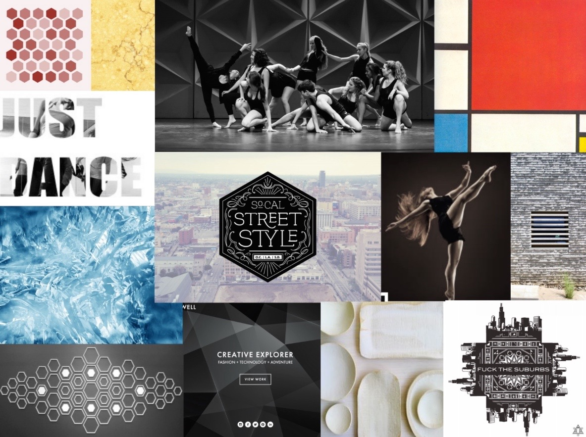

As co-director of Urban Styles, Stanford's only contemporary dance group, in 2014-2015, I set out to design and build a platform to give our group better online publicity.
The Feel of the Site
Before I began designing, I needed to determine what vibe I wanted Urban Styles to give off. Are we professional and refined as a company? Or are we sassy and funky? Ultimately, Urban Styles is a refined group of dancers with individual personalities of fun, so I aimed to create an atmosphere of both professionalism and fun. To capture this, I set out to create a moodboard of geometric shapes, primary colors, and minimalistic, simple designs.
Going For Quantity
Now it was time to brainstorm as many ideas as I could. I push myself to produce at least 30 thumbnail drawings in under 10 minutes, deferring judgement and encouraging all ideas of any kind. Each one of these thumbnail drawings is a different idea for a site. There's gotta be a gem in there somewhere.
Narrowing In
From my preliminary sketches, I selected a few ideas that were unique to expand upon. How unique and out there can I get with this? I kept my wireframes rough and quick by prototyping in Keynote.
set 1
set 2

Time for Typography
I settled on typeface A because the more rigid, sharp-angled typeface of "URBAN" looks strong and structured, while the script typeface emulates the artistry and style of contemporary movement.
Pixel Perfect
visit Urban Styles's webpage